책임 설계감리원이 설계감리의 기성 및 준공을 처리할 때에는 다음 각 호의 준공서류를 구비하여 발주자에게 제출하여야 한다.
설계용역 기성부분 검사원 또는 설계용역 준공검사원
설계용역 기성부분 내역서
설계감리 결과 보고서
감리기록서류
가) ( ① )
나) ( ② )
다) ( ③ )
라) ( ④ )
마) ( ⑤ )
그 밖에 발주자가 과업 지시서 상에서 요구한 사항
정답 ① ② ③ ④ ⑤
해설) 단답 암기형 / 난이도 下
| 점수 | 세부기준 |
|---|---|
| 5~0점 | 소문항 총 5개 중 정답 1개당 1점 획득 |
책임 설계감리원이 설계감리의 기성 및 준공을 처리한 때에는 다음 각 호의 준공 서류를 구비하여 발주자에게 제출하여야 한다.
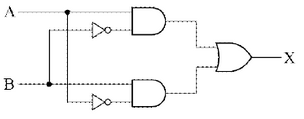
논리식을 쓰시오. 정답
명칭을 쓰시오. 정답
진리표를 완성하시오.
| A | B | X |
|---|---|---|
| 0 | 0 | 1 |
| 0 | 1 | 2 |
| 1 | 0 | 3 |
| 1 | 1 | 4 |
해설) 단답 암기형 / 난이도 下
\[ **(1) 논리식:** X = \overline{A}B + A\overline{B} \]
배타적 논리합 회로(Exclusive OR), XOR
진리표 완성
| A | B | X |
|---|---|---|
| 0 | 0 | 0 |
| 0 | 1 | 1 |
| 1 | 0 | 1 |
| 1 | 1 | 0 |
부분점수
| 점수 | 세부기준 |
|---|---|
| 5점 | 소문항 (1)~(3) 모두 정답이면 5점 획득 |
| 2점 | 소문항 (1)이 정답이면 2점 획득 |
| 1점 | 소문항 (2)가 정답이면 1점 획득 |
| 2점 | 소문항 (3)의 총 4개 중 정답이 0~1개면 0점, 2~3개면 1점, 4개면 2점 |
해설
주어진 회로의 논리식을 적고, 그 회로의 명칭과 진리표를 완성하는 문제이다. 여기서는 XOR의 논리회로 기호를 바로 주어지지 않고 논리식을 풀어서 논리 회로로 주어진 문제다. XOR와 XNOR는 자주 출제되니 정리해 놓도록 하자.
\[ 논리식 : X = \overline{A}B + A\overline{B} \]
\[ 논리식 : X = AB + \overline{A}\overline{B} \]
(해설) 서술 암기형 / 난이도 中
원인: 콘덴서 용량이 전동기의 여자 용량보다 큰 상태에서 유도전동기가 전원에서 개방
현상: 전동기의 단자전압이 일시적으로 정격전압을 초과하는 현상이 발생
| 점수 | 세부기준 |
|---|---|
| 5점 | 소문항 (1), (2)가 모두 정답이면 5점 획득 |
| 3점 | 소문항 (1), (2) 중 1개가 정답이면 3점 획득 |
유도 전동기는 전원이 차단된 직후에도 기계적 관성에 의해 계속 회전하며, 개별로 설치된 콘덴서를 부하로 하는 유도 발전기로 작용하게 된다. 이때 진상 전류에 의해 일시적으로 전동기의 단자전압이 상승하게 되는데 이를 자기여자 현상이라고 한다.
① 전원이 연결된 유도전동기는 고정자 권선과 회전자 권선 사이에 회전자계를 형성하게 되는데 이것은 저장된 에너지라 볼 수 있다.
② 전원이 차단되면 저장된 에너지는 회전자 권선에 전류를 발생시킴.
③ 회전자 권선에 흐르는 전류가 고정자 권선에 전압을 유도됨. (유도발전기)
④ 콘덴서에서도 유도기에 자화전류를 제공하여 전압을 유기함
① 모터 단자전압의 주파수가 일시적으로 초과하고 수 분간 지속될 수 있음.
② 초과된 단자전압으로 권선의 절연성능 하락 또는 절연파괴가 발생 가능.
\[ ① 콘덴서 용량을 부하의 무효성분보다 작게 한다. (Q \le 0.9/\sqrt{3} V_1 I_0, I_0: 전동기 1차측 무부하전류) \]
② 전동기 개방 시 콘덴서도 함께 개방한다.
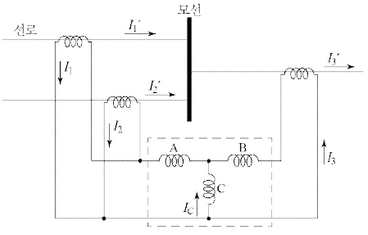
\[ (3) 모선에 단락 고장이 발생되는 경우 코일 C의 전류 I_c의 크기를 구하는 관계식을 적으시오. \]
정답비율차동계전기
A, B: 억제코일, C: 동작코일
\[ (3) I_c = |(I_1 + I_2) - I_3| \]
| 점수 | 세부기준 |
|---|---|
| 6~0점 | 소문항 (1)~(3) 총 3개 중 정답 1개당 2점 획득 |
[비율차동계전기: 87]
3.1.4 옥내용 변류기의 다른 사용 상태
태양열 복사 에너지의 영향은 무시해도 좋다.
주위의 공기는 먼지, 연기, 부식 가스, 증기 및 염분에 의해 심각하게 오염되지 않는다.
습도의 상태는 다음과 같다.
24시간 동안 측정한 상태 습도의 평균값은 (①) [%]를 초과하지 않는다.
24시간 동안 측정한 수증기압의 평균값은 (②) [kPa]을 초과하지 않는다.
1달 동안 측정한 상대 습도의 평균값은 (③) [%]를 초과하지 않는다.
1달 동안 측정한 수증기압의 평균값은 (④) [kPa]을 초과하지 않는다.
| 번호 | 정답 |
|---|---|
| ① | |
| ② | |
| ③ | |
| ④ |
부분점수
| 점수 | 세부기준 |
|---|---|
| 4~0점 | 소문항 총 4개 중 정답 1개당 1점 획득 |
해설
\[ [변류기(KS C IEC 60044-1 : 2003)] \]
3.1.4 옥내용 변류기의 다른 사용 상태
태양열 복사 에너지의 영향은 무시해도 좋다.
주위의 공기는 먼지, 연기, 부식 가스, 증기 및 염분에 의해 심각하게 오염되지 않는다.
습도의 상태는 다음과 같다.
[요구사항]
가) 전원 스위치 MCCB를 투입하면 주회로 및 제어회로에 전원이 공급된다.
나) 누름버튼 스위치 (PB₁)를 누르면 MC₁이 여자되고 MC₁의 보조접점에 의하여 RL이 점등되며, 전동기는 정회전한다.
다) 누름버튼 스위치 (PB₁)를 누른 후 손을 떼어도 MC₁은 자기 유지되어 전동기는 계속 정회전한다.
라) 전동기 운전 중 누름버튼 스위치 (PB₂)를 누르면 연동에 의하여 MC₁이 소자되어 전동기가 정지되고, RL은 소등된다. 이때 MC₂는 자기 유지되어 전동기는 역회전(역상제)하고 타이머가 여자되며, GL이 점등된다.
마) 타이머 설정시간 후 역회전 중인 전동기는 정지하고 GL도 소등된다. 또한 MC₁과 MC₂의 보조접점에 의하여 상호 인터록이 되어 동시에 동작되지 않는다.
바) 전동기 운전 중 과전류가 감지되어 EOCR이 동작되면, 모든 제어회로의 전원은 차단되고 OL만 점등된다.
사) EOCR을 리셋(RESET)하면 초기 상태로 복귀된다.
정답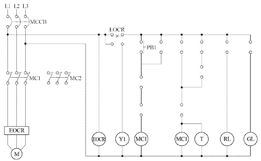
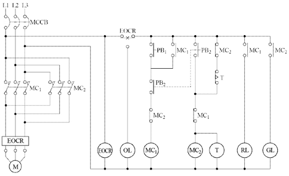
| 점수 | 세부기준 |
|---|---|
| 5점 | 주회로와 보조회로가 모두 정답이면 5점 획득 |
| 2점 | 주회로가 모두 정답이면 2점 획득, 오류가 있으면 0점 |
| 3점 | 보조회로가 모두 정답이면 3점 획득, 오류가 있으면 0점 |
[시퀀스 제어회로 도면완성 문제 작성 순서]
송전선 중의 회선과 휴전 중인 전선의 상호 정전용량은 다음과 같다. \[ C_a = 0.001 \, [\mu F/km] \] \[ C_b = 0.0006 \, [\mu F/km] \] \[ C_c = 0.0004 \, [\mu F/km] \]
휴전 회선의 1선의 대지 정전용량은 \(C_s = 0.0052 \, [\mu F/km]\)이다.
해설) 단순 계산형 / 난이도 中
정답\[ 정전유도전압 E_s \]
\[ |E_s| = \sqrt{\frac{C_a(C_a - C_b) + C_b(C_b - C_c) + C_c(C_c - C_a)}{C_a + C_b + C_c + C_s}} \times E \]
\[ = \sqrt{\frac{0.001 \times (0.001 - 0.0006) + 0.0006 \times (0.0006 - 0.0004) + 0.0004 \times (0.0004 - 0.001)}{0.001 + 0.0006 + 0.0004 + 0.0052}} \times \frac{154 \times 10^3}{\sqrt{3}} = 6534.41 [V] \]
정답 6534.41[V]
부분점수
| 점수 | 세부기준 |
|---|---|
| 5점 | 계산과정과 정답이 모두 맞으면 5점 획득, 오류가 있으면 0점 |
해설
[전선 상호 간의 정전용량 계산식]
\[ |E_s| = \sqrt{\frac{C_a(C_a - C_b) + C_b(C_b - C_c) + C_c(C_c - C_a)}{C_a + C_b + C_c + C_s}} \times E \]
\[ = \sqrt{\frac{C_a(C_a - C_b) + C_b(C_b - C_c) + C_c(C_c - C_a)}{C_a + C_b + C_c + C_s}} \times \frac{V}{\sqrt{3}} \]
해설) 복합 계산형 / 난이도 중
정답\[ 정격전류 I*n = \frac{P}{V*{n}\cos\theta} = \frac{100 \times 10^3}{6300 \times 1} \approx 15.87 [A] \]
\[ 합성 %임피던스 \%Z = \frac{6 \times 6}{6 + 6} = 3 [%] (∵ 병렬) \]
\[ 단락전류 I_s = \frac{100}{\%Z}I_n = \frac{100}{3} \times 15.87 \approx 529.1 [A] \]
정답 529.1 [A]
부분점수
| 점수 | 세부기준 |
|---|---|
| 5점 | 계산과정과 정답이 모두 맞으면 5점 획득, 오류가 있으면 0점 |
해설
\[ 교류 단상 정격 피상전력 P_a = V_n I_n [VA] \]
\[ 교류 단상 정격 유효전력 P_n = P_a \cos\theta = V_n I_n \cos\theta [W] \]
\[ 교류 단상 정격전류 I_n = \frac{P}{V_n \cos\theta} [A] \]
\[ 단락비 K_s = \frac{I_s}{I_n} = \frac{100}{\%Z} = \frac{P_s}{P_n} \]
\[ 단락 전류 I_s = \frac{100}{\%Z}I_n [A] \]
\[ 단락 전력 P_s = \frac{100}{\%Z}P_n [W] \]
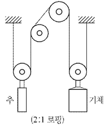
해설) 단순 계산형 / 난이도 中
\[ P = \frac{1000 \times 140 \times 0.6}{6.12 \times 0.8} \times 10^{-3} \approx 17.16 \text{ [kW]} \]
정답 17.16 [kW]
\[ N = \frac{140 \times 2}{\pi \times (760 \times 10^{-3})} \approx 117.27 \text{ [rpm]} \]
정답 117.27 [rpm]
부분점수
| 점수 | 세부기준 |
|---|---|
| 6점 | 소문항 (1), (2)의 계산과정과 정답이 모두 맞은 경우 6점 획득 |
| 3점 | 소문항 (1), (2) 총 2문제 중 계산과정과 정답이 맞은 1개당 3점 획득 |
해설
\[ 9.8 WvK = P\eta, P = \frac{9.8 WvK}{\eta} = \frac{9.8 WV'K}{60\eta} = \frac{WV'K}{6.12\eta} = \frac{wVK}{6.12\eta} \times 10^{-3} \text{ [kW]} \]
\[ (W: 적재하중[ton], w: 적재하중[kg], v: 속도[m/s], V': 케이지속도[m/min], K: 평형율, \eta: 권상기 효율) \]
위의 문제에서 기체의 무게는 주어졌으나, 추의 무게가 주어지지 않았으므로 추의 무게가 같다고 놓는다. 결국 권상기가 권상하여야 할 무게는 적재하중만이 된다.
\[ N = \frac{V}{2\pi r} = \frac{V'}{ \pi D} = \frac{V' \times k}{\pi D} \text{ [rpm]} (여기서, D = 2r) \]
(V: 로프의 속도[m/min], r: 반경[m], D: 구동 로프 바퀴의 직경[m], V’: 케이지의 속도[m/min], k: 로핑 비율)
위의 문제에서는 V는 2:1 로핑으로 케이지의 속도는 140[m/min]일 때 로핑 후의 로프의 속도는 2배인 280[m/min]이 된다.
해설) 단순 계산형 / 난이도 中
정답[계산과정] 회로의 설계전류 \(I_B = \frac{10 \times 100}{220 \times 0.7} \approx 6.49\) [A]
\[ I_B \le I_N \le I_Z 이므로 \]
\[ \therefore I_Z = 6.49 [A] \]
정답 6.49 [A]
부분점수
| 점수 | 세부기준 |
|---|---|
| 5점 | 계산과정과 정답이 모두 맞은 경우 5점 획득, 오류가 있으면 0점 |
해설
\[ 단위 면적당 부하 P_A = \frac{V_n I_B \times k}{A} [W/m^2] \]
\[ (여기서, V_n: 정격전압, I_B: 설계 전류, k: 전류 감소율, A: 면적) \]
\[ 설계전류 I_B = \frac{P_A \times A}{V_n \times k} [A] \]
단락비가 큰 동기발전기는 일반적으로 전기자 권선 수가 적고 자속 수가 (① 적고)하여 기계 치수가 커지므로 철손과 풍손이 커짐에 따라서, 효율은 (② 낮고), 동기 임피던스가 적으므로 전압변동률이 적고 안정도는 (③ 높다 )하게 된다.
정답해설) 단순 계산형+단답 암기형 / 난이도 下
\[ 단락비 K_s = \frac{I_s}{I_n} = \frac{P_s}{\sqrt{3}V} = \frac{700}{\sqrt{3} \times 6000} \approx 1.45 \]
정답 1.45
① 증가 ② 낮고 ③ 증가
부분점수
| 점수 | 세부기준 |
|---|---|
| 6점 | 소문항 (1), (2)의 계산과정과 정답이 모두 맞은 경우 6점 획득 |
| 3점 | 소문항 (1)의 계산과정과 정답이 맞은 경우 3점 획득 |
| 3~0점 | 소문항 (2)의 총 3개 중 정답 1개당 1점 획득 |
해설
\[ K_s = \frac{I_s}{I_n} = \frac{100}{\%Z_s}, P_n = \sqrt{3} V_n I_n [W], I_n = \frac{P_n}{\sqrt{3}V_n} [A] \]
① 안정도가 높다. ② 전압변동률이 작다. ③ 전기자 반작용이 작다. ④ 동기임피던스가 작다. ⑤ 과부하 내량이 크다. ⑥ 출력이 크다. ⑦ 기계가 크다. ⑧ 손실이 크다. ⑨ 효율이 낮다. ⑩ 자기 여자 현상이 작다. 극수가 많은 저속기에 적합하다. 등
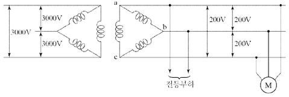
\[ 1상 유효전력 P = \frac{45}{3} = 15 [kW] \]
\[ 1상 무효전력 P_q = P \tan\theta = 15 \times \frac{0.6}{0.8} = 11.25 [kVar] \]
즉, 20[kVA] 단상 변압기를 과부하시키지 않는 범위에서의 변압기 용량 여유분 \(\Delta P\)는 $P_a^2 = (P + P)^2 + Q^2 에서 20^2 = (15 + P)^2 + (11.25)^2 $
\[ \therefore \Delta P = \sqrt{20^2 - 11.25^2} - 15 \approx 1.54 [kW] \]
증가시킬 수 있는 부하
\[ \Delta P' = \frac{3}{2} \times \Delta P = \frac{3}{2} \times 1.54 = 2.31 [kW] \]
따라서, 변압기를 과부하시키지 않고 사용할 수 있는 전등의 수
$ N = = 38.50$으로 계산되고, 이보다는 적어야 하므로 38등이 된다.
정답 38등
부분점수
| 점수 | 세부기준 |
|---|---|
| 5점 | 계산과정과 정답이 모두 맞은 경우 5점 획득, 오류가 있으면 0점 |
해설
역률이 조건으로 주어지지 않으면 역률은 1로 정한다. 과부하가 되지 않아야 하므로 계산되는 전등의 수에 소수가 발생하면 소수 이하는 버려야 한다. △결선에서 1상에만 부하를 접속한다면 다른 2상은 그 부하의 1/2을 분담하므로 전체 부하는 (단상 변압기 용량 × 3/2)이 된다. 그 이유는 △결선일 때 부하에서 바라본 등가회로는 부하가 연결된 상 1개와 나머지 상 2개(직렬연결)의 병렬연결이 된 것으로 나머지 2개의 상은 직렬연결로 부하의 1/2씩을 분담하게 된다.
평균 조도 $E = = = 9[lx] $
정답 9[lx]
| 점수 | 세부기준 |
|---|---|
| 5점 | 계산과정과 정답이 모두 맞은 경우 5점 획득, 오류가 있으면 0점 |
\[ A = \frac{1}{2} \times \text{도로 폭} \times \text{등 간격} = \frac{1}{2} \times 15 \times 20 = 150 [m^2] \]
감광보상률이 조건에 주어지지 않았을 때는 1로 놓는다.
① 도로 양측으로 대칭 배열 또는 도로 양측으로 지그재그 배열
\[ A = \frac{1}{2} \times \text{도로 폭} \times \text{등 간격} [m^2] \]
② 도로 중앙 배열 또는 도로 편도 배열
\[ A = \text{도로 폭} \times \text{등 간격} [m^2] \]
\[ 부하 1: P_1 = 200 kW, Q_1 = 500 kVar \] \[ 부하 2: P_2 = 400 kW, \cos\theta_2 = 0.8 \rightarrow Q_2 = P_2 \tan(\arccos(0.8)) = 400 \times \frac{\sqrt{1-0.8^2}}{0.8} = 300 kVar \]
\[ 총 유효전력: P*{total} = P_1 + P_2 = 200 + 400 = 600 kW \] \[ 총 무효전력: Q*{total} = Q*1 + Q_2 = 500 + 300 = 800 kVar \] \[ 피상전력: S*{total} = \sqrt{P*{total}^2 + Q*{total}^2} = \sqrt{600^2 + 800^2} = 1000 kVA \]
\[ 합성 역률: \cos\theta = \frac{P*{total}}{S*{total}} = \frac{600}{1000} = 0.6 \] \[ 합성 역률[\%]: 0.6 \times 100\% = 60\% \]
정답 60%
커패시터 설치 후 무효전력: \(Q_{total}' = 800 - 350 = 450 kVar\)
변압기 용량 1000kVA를 고려하여 추가 부하의 피상전력을 구하면 다음과 같다.
\[ S\_{add} = \sqrt{(1000)^2 - (600)^2} = 800 kVA \]
추가 부하의 유효전력은 200kW이므로 추가 부하의 역률은 다음과 같다.
\[ \cos\theta\_{add} = \frac{200}{800} = 0.25 \] \[ 역률[\%]: 0.25 \times 100\% = 25\% \]
정답 25%
\[ 새로운 부하 추가 후 총 유효전력: P*{total}'' = 600 + 200 = 800 kW \] \[ 새로운 부하 추가 후 총 무효전력: Q*{total}'' = 450 kVar \] \[ 새로운 부하 추가 후 피상전력: S\_{total}'' = \sqrt{800^2 + 450^2} \approx 910.9 kVA \]
\[ 종합 역률: \cos\theta'' = \frac{P*{total}''}{S*{total}''} = \frac{800}{910.9} \approx 0.878 \] \[ 종합 역률[\%]: 0.878 \times 100\% \approx 87.8\% \]
정답 약 87.8%
해설) 복합 계산형 / 난이도 上
\[ 합성 유효전력 P = P_1 + P_2 = 200 + 400 = 600 [kW] \]
\[ 합성 무효전력 Q = Q_1 + Q_2 = Q_1 + P_2 \times \tan\theta_2 = 500 + 400 \times \frac{0.6}{0.8} = 800 [kVar] \]
\[ 합성역률 \cos\theta_1 = \frac{P}{\sqrt{P^2 + Q^2}} \times 100 = \frac{600}{\sqrt{600^2 + 800^2}} \times 100 = 60 [\%] \]
정답 60 [%]
커패시터 설치 후 전력(전동기 추가 전) \[ P_3 = 600, Q_3 = 800 - 350 = 450 \]
전동기 추가 후 전력 \[ P_4 = 600 + 200 = 800, Q_4 = 450 + Q_m (여기서, Q_m: 전동기의 무효전력) \]
\[ 과부하 조건 대입(\sqrt{P_4^2 + Q_4^2} \le 1000) \] \[ \sqrt{(800)^2 + (450 + Q_m)^2} \le 1000, 800^2 + (450 + Q_m)^2 \le 1000^2 \] \[ (450 + Q_m)^2 \le 1000^2 - 800^2 = 600^2, 450 + Q_m \le 600 \] \[ Q_m \le 600 - 450 = 150 [kVar] \]
\[ 전동기의 역률 \cos\theta_m = \frac{200}{\sqrt{200^2 + 150^2}} \times 100 = 80 [%] \]
정답 80 [%]
\[ 합성역률 \cos\theta_2 = \frac{P_4}{\sqrt{P_4^2 + Q_4^2}} \times 100 = \frac{800}{1000} \times 100 = 80 [%] \]
정답 80 [%]
부분점수
| 점수 | 세부기준 |
|---|---|
| 7점 | 소문항 (1)~(3)의 계산과정과 정답이 모두 맞은 경우 7점 획득 |
| 2점 | 소문항 (1), (3)의 2문제 중 계산과정과 정답이 맞은 1개당 2점 획득 |
| 3점 | 소문항 (2)의 계산과정과 정답이 맞은 경우 3점 획득 |
해설
\[ 역률 \cos\theta = \frac{P}{P_a} = \frac{P}{\sqrt{P^2 + Q^2}} \]
\[ 역률 개선용 전력용 콘덴서 설치 후 역률 \cos\theta_1 = \frac{P}{\sqrt{P^2 + (Q + Q_m)^2}} \]
변압기 용량이 정해진 상태에서의 전동기 추가 시 전동기의 무효전력 계산 \[ Q_m = \sqrt{P_a^2 - (P + P_m)^2} - Q [Var] \] \[ (여기서, P_a: 변압기 용량, P_m: 전동기 유효전력, Q: 전동기 무효전력) \]
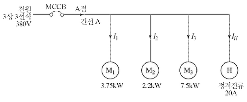
각 전동기의 전류를 계산합니다.
\[ I_1 = \frac{P_1}{\sqrt{3}V\cos\phi_1} = \frac{3750}{\sqrt{3}\times380\times0.88} \approx 6.26[A] \] \[ I_2 = \frac{P_2}{\sqrt{3}V\cos\phi_2} = \frac{2200}{\sqrt{3}\times380\times0.85} \approx 3.72[A] \] \[ I_3 = \frac{P_3}{\sqrt{3}V\cos\phi_3} = \frac{7500}{\sqrt{3}\times380\times0.9} \approx 12.06[A] \]
전열기의 전류는 20[A]입니다.
총 전류는 각 전동기의 전류와 전열기의 전류의 합입니다.
\(I_{total} = I_1 + I_2 + I_3 + I_H = 6.26 + 3.72 + 12.06 + 20 = 42.04[A]\)
따라서, 간선 A점에는 42.04[A] 이상의 허용전류를 갖는 전선을 사용해야 합니다.
정답 42[A]
해설) 복합 계산형 / 난이도 中
① 전동기의 정격전류 계산
② 유효전류 및 무효전류 계산
\[ I*{유효} = 6.47 \times 0.88 + 3.93 \times 0.85 + 12.66 \times 0.9 + 20 = 40.42 [A] \] \[ I*{무효} = 6.47 \times \sqrt{1 - 0.88^2} + 3.93 \times \sqrt{1 - 0.85^2} + 12.66 \times \sqrt{1 - 0.9^2} = 10.66 [A] \]
③ 설계전류 계산
\[ I_B = \sqrt{40.42^2 + 10.66^2} \approx 41.80 [A] \] \[ I*B \le I_z \le I*{Z}의 조건을 만족하는 전선의 허용전류 I_Z \ge 41.8 [A] \]
정답 41.80 [A]
부분점수
| 점수 | 세부기준 |
|---|---|
| 5점 | 계산과정과 정답이 모두 맞은 경우 5점 획득, 오류가 있으면 0점 |
해설
3상 3선식 배선에서의 전류는 역률이 다르므로 우선 정격전류를 구한 후, 유효전류와 무효전류로 분리하여 계산한다. 총 간선에 흐르는 전류는 유효전류와 무효전류를 이용한 절대값 크기로 구하며 이것이 설계전류가 된다. \(I_B \le I_z \le I_Z\)의 조건을 만족하는 전선의 허용전류를 구하면 된다.
[조건]
[전선의 허용 전류표]
| 단면적 [mm²] | 허용전류 [A] | 전선관 3본 이하 수용 시 [A] | 피복포함 단면적 [mm²] |
|---|---|---|---|
| 6 | 54 | 48 | 32 |
| 10 | 75 | 66 | 43 |
| 16 | 100 | 88 | 58 |
| 25 | 133 | 117 | 88 |
| 35 | 164 | 144 | 104 |
| 50 | 198 | 175 | 163 |
[부하 집계표]
| 회로 번호 | 부하 명칭 | 부하 [VA] | 부하 분담 [VA] | MCCB 크기 | 비고 | ||
|---|---|---|---|---|---|---|---|
| A | B | 극수 | AF | AT | |||
| 1 | 전등 | 2,400 | 1,200 | 1,200 | 2 | 50 | 16 |
| 2 | 전등 | 1,400 | 700 | 700 | 2 | 50 | 16 |
| 3 | 콘센트 | 1,000 | 1,000 | 2 | 50 | 20 | |
| 4 | 콘센트 | 1,400 | 1,400 | 2 | 50 | 20 | |
| 5 | 콘센트 | 600 | 600 | 2 | 50 | 20 | |
| 6 | 콘센트 | 1,000 | 1,000 | 2 | 50 | 20 | |
| 7 | 팬코일 | 700 | 700 | 2 | 30 | 16 | |
| 8 | 팬코일 | 700 | 700 | 2 | 30 | 16 | |
| 합계 | 9,200 | 5,000 | 4,200 |
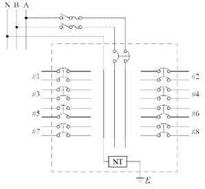
해설) 복합 계산형+도면완성 / 난이도 상
\[ A선의 전류 I_A = \frac{5000}{110} = 45.45 [A] \]
\[ B선의 전류 I_B = \frac{4200}{110} = 38.18 [A] \]
$ I_A, I_B$ 중 큰 값인 45.45[A]를 기준으로 함
\[ A = \frac{17.8 \times L \times I}{1000 \times V \times e} = \frac{17.8 \times 60 \times 45.45}{1000 \times 110 \times 0.02} = 22.06 [mm^2] (단상 3선식) \]
정답 단면적 25 [mm²] 전선 선정
[전선의 허용전류표]에서 25[mm²] 전선의 피복 포함 단면적이 88[mm²]이므로
전선의 총 단면적 $A_{wire} = 88 = 264 [mm^2] $
문제의 조건에서 후강전선관 내단면적의 48[%] 이내를 유지해야 하므로
\[ A = \frac{1}{4}\pi d^2 \times 0.48 \ge 264 \quad \therefore d = \sqrt{\frac{4A}{\pi \times 0.48}} = \sqrt{\frac{4 \times 264}{\pi \times 0.48}} \approx 26.46 [mm] \]
정답 지름 28[mm] 후강전선관 선정
설계전류 \(I_B = I_A\) = 45.45 [A]이고
공칭단면적 25[mm²] 전선의 허용전류 \(I_z\) = 117 [A]이므로
$ I_B I_n I_z, 45.45 I_n $ 의 조건을 만족하는
정격전류 \(I_n\) = 100 [A]의 과전류차단기를 선정한다.
정답 AF : 100[A], AT : 100[A]
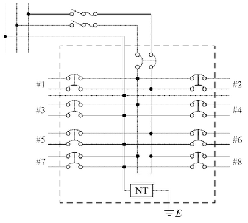
\[ 설비불평형률 = \frac{3100 - 2300}{\frac{1}{2}(5000 + 4200)} \times 100 = \frac{800}{4600} \times 100 \approx 17.39 [\%] \]
정답 17.39 [%]
부분점수
| 점수 | 세부기준 |
|---|---|
| 11점 | 소문항 (1)~(5)의 계산과정과 정답이 모두 맞은 경우 11점 획득 |
| 8~0점 | 소문항 (1)~(3), (5) 총 4개 중 계산과정과 정답이 맞은 1개당 2점 |
| 3점 | 소문항 (4)의 도면완성이 정답과 맞으면 3점, 오류가 있으면 0점 |
해설
[도체와 과부하 보호장치 사이의 협조 (KEC 212.4.1)]
과부하에 대해 케이블(전선)을 보호하는 장치의 동작특성은 다음의 조건을 충족해야 한다.
\[ I_B \le I_n \le I_z, I_z \le 1.45 \times I_n \]
\(I_B\): 회로의 설계전류(선도체를 흐르는 설계전류 또는 함유율이 높은 영상분 고조파, 특히 제3고조파가 지속적으로 흐르는 경우 중성선에 흐르는 전류이다.)
\(I_z\): 케이블의 허용전류
\(I_n\): 보호장치의 정격전류(사용현장에 적합하게 조정된 전류의 설정 값)
\(I_t\): 보호장치가 규약시간 이내에 유효하게 동작하는 것을 보장하는 전류
[단상 3선식에서 설비불평형률]
설비불평형률 = \(\frac{\text{중성선과 각 전압측 접속되는 부하설비용량[kVA] 차}}{\frac{1}{2} \text{총 부하설비용량[kVA]}} \times 100\) [%]
(여기서, 불평형률은 40[%] 이하 이어야 한다.)
② 전등(NO. 1과 NO. 2)은 전원선(A 또는 B)에 접속되는 부하설비이므로, ’중성선과 각 전압측 전선간에 접속되는 부하설비용량[kVA]의 차’에는 포함되지 않는다.
\[ P_A = 1000 + 1400 + 700 = 3100 [VA], P_B = 600 + 1000 + 700 = 2300 [VA] \]
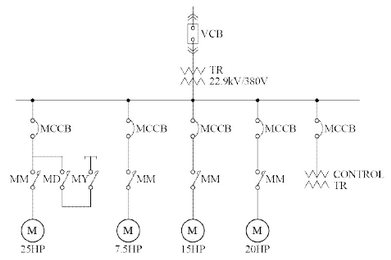
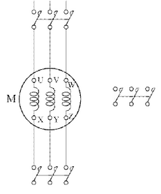
해설: 단순 계산형 + 도면 완성 + 서술 암기형 / 난이도 중상
[계산 과정]
\[ 전동기 출력 P = \frac{20 \times 0.746}{0.9 \times 0.8} \approx 20.72 [kVA] \]
\[ 정격 전류 I = \frac{P}{\sqrt{3}V} = \frac{20.72 \times 10^3}{\sqrt{3} \times 380} \approx 31.48 [A] \]
따라서, $I_B I I_Z $의 조건을 만족하는 전선의 허용 전류 \(I_Z \ge 31.48 [A]\)
정답 31.48 [A]
[계산 과정]
\[ 변압기 용량 = \frac{(25 + 7.5 + 15 + 20) \times 0.746 \times 0.65}{0.9 \times 0.8} \approx 45.46 [kVA] \]
정답 50 [kVA] 선정
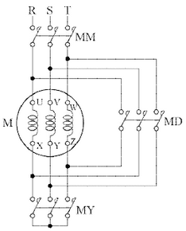
고전압을 저전압으로 강압하여 제어회로에 공급
부분 점수
| 점수 | 세부 기준 |
|---|---|
| 10점 | 소문항 (1)~(4)의 계산 과정과 정답이 모두 맞는 경우 10점 획득 |
| 3점 | 소문항 (1), (2) 중 2문항 중 계산 과정과 정답이 맞는 1개당 3점 획득 |
| 2점 | 소문항 (3), (4) 중 2문항 중 정답이 맞는 1개당 2점 획득 |
해설
분기 회로에서는 수용률을 고려할 필요 없다.
변압기 용량 [kVA] ≥ 합성 최대 수용 전력
\[ = \frac{\text{설비 용량 [kVA]} \times \text{수용률}}{\text{부등률}} = \frac{\text{설비 용량 [kW]} \times \text{수용률}}{\text{부등률} \times \text{역률}} \]
1[HP] = 746[W] = 0.746 [kW]
부하의 효율이 주어지면 효율을 고려해야 한다.